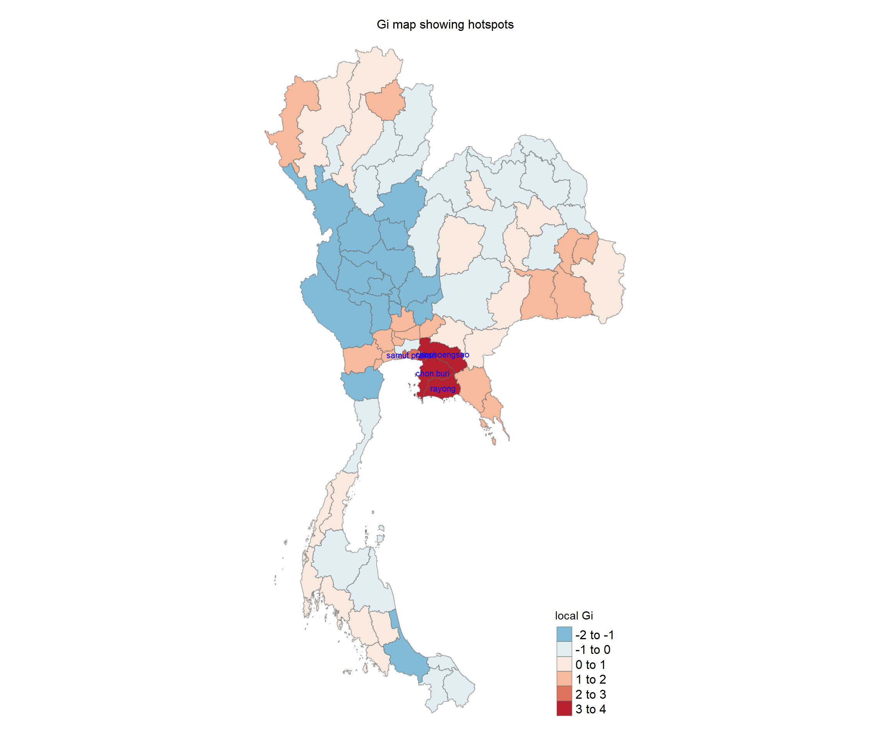

pacman::p_load(sf, lubridate, tmap, tidyverse, spdep, sfdep, smoothr, dplyr, tidyr)Take-home Exercise 2: Application of Geospatial Analysis Methods to Discover Thailand Drug Abuse at the Province Level
1.0 Introduction
Context:
Drug abuse is associated with significant negative health, financial and social consequences. Yet, illicit drug consumption remains highly prevalent and continues to be a growing problem worldwide. In 2021, 1 in 17 people, aged 15–64 in the world had used a drug in the past 12 months. Notwithstanding population growth, the estimated number of drug users grew from 240 million in 2011 to 296 million in 2021.
The geopolitics of Thailand which is near the Golden Triangle of Indochina, the largest drug production site in Asia, and the constant transportation infrastructure development made Thailand became market and transit routes for drug trafficking to the third countries.
In Thailand, drug abuse is one of the major social issue. There are about 2.7 million youths using drugs in Thailand. Among youths aged between 15 and 19 years, there are about 300,000 who have needs for drug treatment. Most of Thai youths involved with drugs are vocational-school students, which nearly doubles in number compared to secondary-school students.
Figure below shows geographic distribution of drug use cases by province and by year.
Objectives:
if the key indicators of drug abuse of Thailand are independent from space. (spatial independent, randomly distributed) (spatial weights and applications)
If the indicators of drug abuse is indeed spatial dependent, then, you would like to detect where are the clusters and outliers, and the hotspots. (no need for emerging hotspots)
Last but not least, you are also interested to investigate how the observation above evolve over time. (no need for spatial-temporal)
2.0 Importing Packages
3.0 Importing Datasets into Environment
geospatial (admin1 (province level))
thailand_boundary = st_read(dsn="data/geospatial/", layer="tha_admbnda_adm1_rtsd_20220121")Reading layer `tha_admbnda_adm1_rtsd_20220121' from data source `C:\marcus159260\IS415-GAA\take-home_exercises\take-home_ex02\data\geospatial' using driver `ESRI Shapefile' Simple feature collection with 77 features and 16 fields Geometry type: MULTIPOLYGON Dimension: XY Bounding box: xmin: 97.34336 ymin: 5.613038 xmax: 105.637 ymax: 20.46507 Geodetic CRS: WGS 84dim(thailand_boundary)[1] 77 17# plot(thailand_boundary, max.plot=16)aspatial
thailand_sf <- read_csv("data/aspatial/thai_drug_offenses_2017_2022.csv")Rows: 7392 Columns: 5 ── Column specification ──────────────────────────────────────────────────────── Delimiter: "," chr (3): types_of_drug_offenses, province_th, province_en dbl (2): fiscal_year, no_cases ℹ Use `spec()` to retrieve the full column specification for this data. ℹ Specify the column types or set `show_col_types = FALSE` to quiet this message.dim(thailand_sf)[1] 7392 5
4.0 Data Wrangling + necessary Projection Transformation
4.1 Dropping redundant columns + Left Join
- Dropping columns with NA and columns that do not give us valuable information
thailand_boundary <- thailand_boundary %>%
select(1:3, 14:17)
thailand_sf <- thailand_sf %>%
select(1:3, 5)- We need to further understand a bit more about the common identifier (province), hence printing the unique provinces, which is both 76 unique provinces for both boundary and sf.
unique_provinces_boundary <- unique(thailand_boundary$ADM1_EN)
unique_provinces_boundary [1] "Bangkok" "Samut Prakan"
[3] "Nonthaburi" "Pathum Thani"
[5] "Phra Nakhon Si Ayutthaya" "Ang Thong"
[7] "Lop Buri" "Sing Buri"
[9] "Chai Nat" "Saraburi"
[11] "Chon Buri" "Rayong"
[13] "Chanthaburi" "Trat"
[15] "Chachoengsao" "Prachin Buri"
[17] "Nakhon Nayok" "Sa Kaeo"
[19] "Nakhon Ratchasima" "Buri Ram"
[21] "Surin" "Si Sa Ket"
[23] "Ubon Ratchathani" "Yasothon"
[25] "Chaiyaphum" "Amnat Charoen"
[27] "Bueng Kan" "Nong Bua Lam Phu"
[29] "Khon Kaen" "Udon Thani"
[31] "Loei" "Nong Khai"
[33] "Maha Sarakham" "Roi Et"
[35] "Kalasin" "Sakon Nakhon"
[37] "Nakhon Phanom" "Mukdahan"
[39] "Chiang Mai" "Lamphun"
[41] "Lampang" "Uttaradit"
[43] "Phrae" "Nan"
[45] "Phayao" "Chiang Rai"
[47] "Mae Hong Son" "Nakhon Sawan"
[49] "Uthai Thani" "Kamphaeng Phet"
[51] "Tak" "Sukhothai"
[53] "Phitsanulok" "Phichit"
[55] "Phetchabun" "Ratchaburi"
[57] "Kanchanaburi" "Suphan Buri"
[59] "Nakhon Pathom" "Samut Sakhon"
[61] "Samut Songkhram" "Phetchaburi"
[63] "Prachuap Khiri Khan" "Nakhon Si Thammarat"
[65] "Krabi" "Phangnga"
[67] "Phuket" "Surat Thani"
[69] "Ranong" "Chumphon"
[71] "Songkhla" "Satun"
[73] "Trang" "Phatthalung"
[75] "Pattani" "Yala"
[77] "Narathiwat" unique_provinces_sf <- unique(thailand_sf$province_en)
unique_provinces_sf [1] "Bangkok" "Chai Nat"
[3] "Nonthaburi" "Pathum Thani"
[5] "Phra Nakhon Si Ayutthaya" "Loburi"
[7] "Samut Prakan" "Saraburi"
[9] "Sing Buri" "Ang Thong"
[11] "Chanthaburi" "Chachoengsao"
[13] "Chon Buri" "Trat"
[15] "Nakhon Nayok" "Prachin Buri"
[17] "Rayong" "Sa Kaeo"
[19] "Chaiyaphum" "Nakhon Ratchasima"
[21] "Buri Ram" "Yasothon"
[23] "Si Sa Ket" "Surin"
[25] "Amnat Charoen" "Ubon Ratchathani"
[27] "Kalasin" "Khon Kaen"
[29] "Nakhon Phanom" "buogkan"
[31] "Maha Sarakham" "Mukdahan"
[33] "Roi Et" "Loei"
[35] "Sakon Nakhon" "Nong Khai"
[37] "Nong Bua Lam Phu" "Udon Thani"
[39] "Chiang Rai" "Chiang Mai"
[41] "Nan" "Phayao"
[43] "Phrae" "Mae Hong Son"
[45] "Lampang" "Lamphun"
[47] "Kamphaeng Phet" "Tak"
[49] "Nakhon Sawan" "Phichit"
[51] "Phitsanulok" "Phetchabun"
[53] "Sukhothai" "Uttaradit"
[55] "Uthai Thani" "Kanchanaburi"
[57] "Nakhon Pathom" "Prachuap Khiri Khan"
[59] "Phetchaburi" "Ratchaburi"
[61] "Samut Songkhram" "Samut Sakhon"
[63] "Suphan Buri" "Krabi"
[65] "Chumphon" "Nakhon Si Thammarat"
[67] "Phangnga" "Phuket"
[69] "Ranong" "Surat Thani"
[71] "Trang" "Narathiwat"
[73] "Pattani" "Phatthalung"
[75] "Yala" "Songkhla"
[77] "Satun" After studying the columns of both the geospatial and aspatial data, we see that the aspatial data (thailand_sf) lacks geometrical data (such as the latitude and longitude spatial features). We need to join both boundary and working data with its common columns: ADM1_EN (thailand_boundary) and province_en (thailand_sf).
- First, we need to mutate to get the common identifier
thailand_boundary <- thailand_boundary %>%
mutate(ADM1_EN = str_to_lower(ADM1_EN), # Convert to lowercase
ADM1_EN = str_trim(ADM1_EN))
thailand_sf <- thailand_sf %>%
mutate(province_en = str_to_lower(province_en), # Convert to lowercase
province_en = str_trim(province_en))- Second, we perform a left join. After left join, impute the 2 province rows with missing values with the mean values.
thailand_left_join <- thailand_boundary %>%
left_join(thailand_sf, by = c("ADM1_EN" = "province_en")) %>%
select(3:4, 7:10)missing_provinces <- thailand_left_join %>%
filter(is.na(no_cases)) %>% # Check for NA in the case column
select(ADM1_EN)
print(missing_provinces)Simple feature collection with 2 features and 1 field
Geometry type: MULTIPOLYGON
Dimension: XY
Bounding box: xmin: 100.42 ymin: 14.64684 xmax: 104.19 ymax: 18.44898
Geodetic CRS: WGS 84
ADM1_EN geometry
1 Lop Buri MULTIPOLYGON (((101.3453 15...
2 Bueng Kan MULTIPOLYGON (((103.405 18....thailand_left_join_filtered <- thailand_left_join %>%
filter(!is.na(no_cases)) # Exclude rows where no_cases is NA4.2 Dropping and summing total number of drug cases
Understanding our data
- unique years, provinces, and types of drug offenses
unique_years = unique(thailand_left_join_filtered$fiscal_year)
unique_provinces = unique(thailand_left_join_filtered$ADM1_EN)
unique_types = unique(thailand_left_join_filtered$types_of_drug_offenses)
unique_years[1] 2017 2018 2019 2020 2021 2022cat('\n')unique_provinces [1] "Bangkok" "Samut Prakan"
[3] "Nonthaburi" "Pathum Thani"
[5] "Phra Nakhon Si Ayutthaya" "Ang Thong"
[7] "Sing Buri" "Chai Nat"
[9] "Saraburi" "Chon Buri"
[11] "Rayong" "Chanthaburi"
[13] "Trat" "Chachoengsao"
[15] "Prachin Buri" "Nakhon Nayok"
[17] "Sa Kaeo" "Nakhon Ratchasima"
[19] "Buri Ram" "Surin"
[21] "Si Sa Ket" "Ubon Ratchathani"
[23] "Yasothon" "Chaiyaphum"
[25] "Amnat Charoen" "Nong Bua Lam Phu"
[27] "Khon Kaen" "Udon Thani"
[29] "Loei" "Nong Khai"
[31] "Maha Sarakham" "Roi Et"
[33] "Kalasin" "Sakon Nakhon"
[35] "Nakhon Phanom" "Mukdahan"
[37] "Chiang Mai" "Lamphun"
[39] "Lampang" "Uttaradit"
[41] "Phrae" "Nan"
[43] "Phayao" "Chiang Rai"
[45] "Mae Hong Son" "Nakhon Sawan"
[47] "Uthai Thani" "Kamphaeng Phet"
[49] "Tak" "Sukhothai"
[51] "Phitsanulok" "Phichit"
[53] "Phetchabun" "Ratchaburi"
[55] "Kanchanaburi" "Suphan Buri"
[57] "Nakhon Pathom" "Samut Sakhon"
[59] "Samut Songkhram" "Phetchaburi"
[61] "Prachuap Khiri Khan" "Nakhon Si Thammarat"
[63] "Krabi" "Phangnga"
[65] "Phuket" "Surat Thani"
[67] "Ranong" "Chumphon"
[69] "Songkhla" "Satun"
[71] "Trang" "Phatthalung"
[73] "Pattani" "Yala"
[75] "Narathiwat" cat('\n')unique_types [1] "drug_use_cases"
[2] "suspects_in_drug_use_cases"
[3] "possession_cases"
[4] "suspects_in_possession_cases"
[5] "possession_with_intent_to_distribute_cases"
[6] "suspects_in_possession_with_intent_to_distribute_cases"
[7] "trafficking_cases"
[8] "suspects_in_trafficking_cases"
[9] "production_cases"
[10] "suspects_in_production_cases"
[11] "import_cases"
[12] "suspects_in_import_cases"
[13] "export_cases"
[14] "suspects_in_export_cases"
[15] "conspiracy_cases"
[16] "suspects_in_conspiracy_cases" Filtering and Data Wrangling
As we are only interested in drug_cases under the types_of_drug_offenses, we need to filter based on that.
Lets drop both date and types_of_drug_offenses column, Sum all the no_cases by each year and province and sort them ascending, drop rows where the total_cases are 0.
thailand <- thailand_left_join_filtered %>%
select("ADM1_EN", "fiscal_year", "types_of_drug_offenses", "no_cases", "geometry") %>%
filter(types_of_drug_offenses == "drug_use_cases") %>%
filter(no_cases > 0) %>%
arrange(fiscal_year)
thailandSimple feature collection with 450 features and 4 fields
Geometry type: MULTIPOLYGON
Dimension: XY
Bounding box: xmin: 97.34336 ymin: 5.613038 xmax: 105.637 ymax: 20.46507
Geodetic CRS: WGS 84
First 10 features:
ADM1_EN fiscal_year types_of_drug_offenses no_cases
1 Bangkok 2017 drug_use_cases 11871
2 Samut Prakan 2017 drug_use_cases 820
3 Nonthaburi 2017 drug_use_cases 553
4 Pathum Thani 2017 drug_use_cases 450
5 Phra Nakhon Si Ayutthaya 2017 drug_use_cases 378
6 Ang Thong 2017 drug_use_cases 208
7 Sing Buri 2017 drug_use_cases 127
8 Chai Nat 2017 drug_use_cases 200
9 Saraburi 2017 drug_use_cases 69
10 Chon Buri 2017 drug_use_cases 4180
geometry
1 MULTIPOLYGON (((100.6139 13...
2 MULTIPOLYGON (((100.7306 13...
3 MULTIPOLYGON (((100.3415 14...
4 MULTIPOLYGON (((100.8916 14...
5 MULTIPOLYGON (((100.5131 14...
6 MULTIPOLYGON (((100.3332 14...
7 MULTIPOLYGON (((100.3691 15...
8 MULTIPOLYGON (((100.1199 15...
9 MULTIPOLYGON (((101.3994 15...
10 MULTIPOLYGON (((100.9719 12...Pivoting the fiscal years to get unique Polygons
- We do this because when we do polygonal rendering, there are 6 copies (years 2017-2022) of the same polygons, which will slow down the time it takes to execute the process such as the poly2nb() spatial weights when we attempt to find the neighbours of regions. Hence, we need to reshape the dataframe using pivot_wider() to reduce the number of rows (450/6 = 75), and make the geometry polygons unique, while keeping our provinces unique as well. This is done by transposing the fiscal_year and no_cases to more columns by the number of cases in each year (no_cases_<year>).
# Pivoting data to widen fiscal_year into separate no_cases columns by year
thailand <- thailand %>%
group_by(ADM1_EN, geometry) %>%
pivot_wider(names_from = fiscal_year,
values_from = no_cases,
names_prefix = "no_cases_") %>%
ungroup()thailand <- thailand %>%
mutate(total_cases = no_cases_2017 + no_cases_2018 +
no_cases_2019 + no_cases_2020 +
no_cases_2021 + no_cases_2022)4.3 Projection Transformation
Since the EPSG code is 4326, which is the global code. We want to change both the EPSG code of the boundary data and working data to Thailand’s global projection system. Acquiring the code from https://epsg.io/32647
- We will transform the it to Thailand’s projected coordinate system (UTM Zone 47N) with the EPSG code: 32647
thailand <- thailand %>%
st_transform(crs=32647)st_crs(thailand)4.3 Plotting the shapefile object to visualise structure
thailand_shp = st_read("data/geospatial/tha_admbnda_adm1_rtsd_20220121.shp")boundary_plot <- tmap_mode("plot")
tm_shape(thailand_shp)+
tm_fill(col="white")+
tm_borders(col = "black", lwd=0.3, alpha=0.6)+
tm_layout(
main.title = "Provinces",
main.title.size = 1,
main.title.position = "center",
legend.show = FALSE,
frame = FALSE)# basemap <- tm_shape(thailand) +
# tm_polygons() +
# tm_text("ADM1_EN", size=0.5)
#
# drug_cases <- qtm(thailand, "no_cases")
# tmap_arrange(basemap, drug_cases, asp=1, ncol=2)4.4 Writing and Reading into RDS format
#thailand combined dataframe
write_rds(thailand, "data/rds/thailand.rds")
#plot
# write_rds(boundary_plot, "data/rds/boundary_plot.rds")
# write_rds(basemap, "data/rds/basemap.rds")
# write_rds(drug_cases, "data/rds/drug_cases.rds")thailand <- read_rds("data/rds/thailand.rds")5.0 Exploratory Spatial Data Analysis
- min and max total no of drug cases
min_cases = min(thailand$no_cases, na.rm = FALSE)Warning: Unknown or uninitialised column: `no_cases`.Warning in min(thailand$no_cases, na.rm = FALSE): no non-missing arguments to
min; returning Infmax_cases = max(thailand$no_cases, na.rm = FALSE)Warning: Unknown or uninitialised column: `no_cases`.Warning in max(thailand$no_cases, na.rm = FALSE): no non-missing arguments to
max; returning -Infmin_cases[1] Infcat("\n")max_cases[1] -Inf5.1 Plotting
5.1.1 Total number of cases by each year and each province
min_cases <- min(thailand$no_cases_2017, thailand$no_cases_2018, thailand$no_cases_2019,
thailand$no_cases_2020, thailand$no_cases_2021, thailand$no_cases_2022, na.rm = TRUE)
max_cases <- max(thailand$no_cases_2017, thailand$no_cases_2018, thailand$no_cases_2019,
thailand$no_cases_2020, thailand$no_cases_2021, thailand$no_cases_2022, na.rm = TRUE)
# Define custom breaks based on the range
custom_breaks <- seq(min_cases, max_cases, length.out = 5)
# Plot for 2017
plot_2017 <- tm_shape(thailand) +
tm_polygons("no_cases_2017",
palette = "Blues",
breaks = custom_breaks,
title = "Drug Cases (2017)") +
tm_borders(alpha = 0.5) +
tm_layout(main.title = "2017",
title.size = 0.8, # Smaller title size
legend.outside = TRUE, # Legend outside the map area
asp = 0.8,
frame = TRUE,
legend.show = TRUE) # Show legend for only this plot
# Plot for 2018
plot_2018 <- tm_shape(thailand) +
tm_polygons("no_cases_2018",
palette = "Blues",
breaks = custom_breaks,
title = "Drug Cases (2018)") +
tm_borders(alpha = 0.5) +
tm_layout(main.title = "2018",
title.size = 0.8,
asp = 0.8,
frame = TRUE,
legend.show = FALSE) # Hide legend
# Plot for 2019
plot_2019 <- tm_shape(thailand) +
tm_polygons("no_cases_2019",
palette = "Blues",
breaks = custom_breaks,
title = "Drug Cases (2019)") +
tm_borders(alpha = 0.5) +
tm_layout(main.title = "2019",
title.size = 0.8,
asp = 0.8,
frame = TRUE,
legend.show = FALSE) # Hide legend
# Plot for 2020
plot_2020 <- tm_shape(thailand) +
tm_polygons("no_cases_2020",
palette = "Blues",
breaks = custom_breaks,
title = "Drug Cases (2020)") +
tm_borders(alpha = 0.5) +
tm_layout(main.title = "2020",
title.size = 0.8,
asp = 0.8,
frame = TRUE,
legend.show = FALSE) # Hide legend
# Plot for 2021
plot_2021 <- tm_shape(thailand) +
tm_polygons("no_cases_2021",
palette = "Blues",
breaks = custom_breaks,
title = "Drug Cases (2021)") +
tm_borders(alpha = 0.5) +
tm_layout(main.title = "2021",
title.size = 0.8,
asp = 0.8,
frame = TRUE,
legend.show = FALSE) # Hide legend
# Plot for 2022
plot_2022 <- tm_shape(thailand) +
tm_polygons("no_cases_2022",
palette = "Blues",
breaks = custom_breaks,
title = "Drug Cases (2022)") +
tm_borders(alpha = 0.5) +
tm_layout(main.title = "2022",
title.size = 0.8,
asp = 0.8,
frame = TRUE,
legend.show = FALSE) # Hide legend
# Arrange all plots side by side in a grid with one legend
tmap_arrange(plot_2017, plot_2018, plot_2019, plot_2020, plot_2021, plot_2022, asp = 1, ncol = 6)Warning: One tm layer group has duplicated layer types, which are omitted. To
draw multiple layers of the same type, use multiple layer groups (i.e. specify
tm_shape prior to each of them).Legend labels were too wide. The labels have been resized to 0.07, 0.05, 0.05, 0.04. Increase legend.width (argument of tm_layout) to make the legend wider and therefore the labels larger.Warning: One tm layer group has duplicated layer types, which are omitted. To
draw multiple layers of the same type, use multiple layer groups (i.e. specify
tm_shape prior to each of them).
Warning: One tm layer group has duplicated layer types, which are omitted. To
draw multiple layers of the same type, use multiple layer groups (i.e. specify
tm_shape prior to each of them).
Warning: One tm layer group has duplicated layer types, which are omitted. To
draw multiple layers of the same type, use multiple layer groups (i.e. specify
tm_shape prior to each of them).
Warning: One tm layer group has duplicated layer types, which are omitted. To
draw multiple layers of the same type, use multiple layer groups (i.e. specify
tm_shape prior to each of them).
Warning: One tm layer group has duplicated layer types, which are omitted. To
draw multiple layers of the same type, use multiple layer groups (i.e. specify
tm_shape prior to each of them).
5.1.2 Side by side view of province and total no of drug cases in year 2017
# provinces <- tm_shape(thailand %>% filter(fiscal_year == 2017)) +
# tm_polygons() +
# tm_text("ADM1_EN", size=0.5)
#
# custom_breaks <- c(0, 5000, 10000, 15000, 20000) # Customize as necessary
#
# # total_cases <- qtm(thailand_summary, "total_cases")
# no_cases <- tm_shape(thailand) +
# tm_polygons("no_cases",
# breaks = custom_breaks, # Apply the custom breaks
# palette = "Blues", # Color palette
# title = "Number of Cases") # Title for the legend
# tmap_arrange(provinces, no_cases, asp=1, ncol=2)5.1.3 Top 5 Provinces with the highest number of drug cases over all the years
# Step 1: Find the top 5 provinces with the highest total cases
top_5_provinces <- thailand %>%
arrange(desc(total_cases)) %>%
slice_head(n = 5) # Select the top 5 rows
# Step 2: Highlight the top 5 provinces
provinces <- tm_shape(thailand) +
tm_polygons() +
tm_text("ADM1_EN", size = 0.5)
# Apply custom breaks to the total_cases plot
total_cases <- tm_shape(thailand) +
tm_polygons("total_cases",
breaks = custom_breaks, # Apply the custom breaks
palette = "Blues", # Color palette
title = "Total Cases") +
tm_borders(alpha = 0.5)
# Step 3: Highlight the top 5 provinces on the same plot
highlight_top_5 <- tm_shape(top_5_provinces) +
tm_borders(col = "red", lwd = 3) + # Use red borders to highlight
tm_text("ADM1_EN", size = 0.7, col = "black") # Optional: Label them
# Step 4: Arrange the plots
tmap_arrange(provinces, total_cases + highlight_top_5, asp = 1, ncol = 2)Warning: One tm layer group has duplicated layer types, which are omitted. To
draw multiple layers of the same type, use multiple layer groups (i.e. specify
tm_shape prior to each of them).Warning: Values have found that are higher than the highest break
5.2 Visualising Equal and Quantile over all the years
equal <- tm_shape(thailand) +
tm_polygons("total_cases",
palette = "Blues",
style="equal", n=10) +
tm_borders(alpha = 0.5) +
tm_layout(main.title = "Equal interval classification", title.size = 2)
quantile <- tm_shape(thailand) +
tm_polygons("total_cases",
palette = "Blues",
style="quantile", n=10) +
tm_layout(main.title = "Quantile interval classification", title.size = 2)
tmap_arrange(equal,
quantile,
asp=1,
ncol=2)Warning: One tm layer group has duplicated layer types, which are omitted. To
draw multiple layers of the same type, use multiple layer groups (i.e. specify
tm_shape prior to each of them).
6.0 Global Measures of Spatial Autocorrelation
- If we attempt to use contiguity-based spatial weights to find neighbours, and use the queen method, we come up with a region that is not linked to any neighbours, which is incorrect. Hence, we need to swap to using distance-based method to find neighbours.
wm_q <- poly2nb(thailand,
queen = TRUE)Warning in poly2nb(thailand, queen = TRUE): some observations have no neighbours;
if this seems unexpected, try increasing the snap argument.Warning in poly2nb(thailand, queen = TRUE): neighbour object has 2 sub-graphs;
if this sub-graph count seems unexpected, try increasing the snap argument.summary(wm_q)Neighbour list object:
Number of regions: 75
Number of nonzero links: 330
Percentage nonzero weights: 5.866667
Average number of links: 4.4
1 region with no links:
65
2 disjoint connected subgraphs
Link number distribution:
0 1 2 3 4 5 6 7 8 9
1 1 6 18 14 16 11 5 1 2
1 least connected region:
13 with 1 link
2 most connected regions:
27 49 with 9 linkswrite_rds(wm_q, "data/rds/wm_q.rds")wm_q <- read_rds("data/rds/wm_q.rds")
summary(wm_q)Neighbour list object:
Number of regions: 75
Number of nonzero links: 330
Percentage nonzero weights: 5.866667
Average number of links: 4.4
1 region with no links:
65
2 disjoint connected subgraphs
Link number distribution:
0 1 2 3 4 5 6 7 8 9
1 1 6 18 14 16 11 5 1 2
1 least connected region:
13 with 1 link
2 most connected regions:
27 49 with 9 linksnb2listw() is used to convert the nb object into spatial weights object.
rswm_q <- nb2listw(wm_q,
style="W",
zero.policy = TRUE)
rswm_qCharacteristics of weights list object:
Neighbour list object:
Number of regions: 75
Number of nonzero links: 330
Percentage nonzero weights: 5.866667
Average number of links: 4.4
1 region with no links:
65
2 disjoint connected subgraphs
Weights style: W
Weights constants summary:
n nn S0 S1 S2
W 74 5476 74 36.37549 308.55456.1 Configuring and Binding coordinates
Computing longitude and latitude to achieve coordinates
- longitude
longitude <- map_dbl(thailand$geometry, ~st_centroid(.x)[[1]])- latitude
latitude <- map_dbl(thailand$geometry, ~st_centroid(.x)[[2]])- bind the coordinates
coords <- cbind(longitude, latitude)head(coords) longitude latitude
[1,] 675514.6 1523087
[2,] 685033.7 1503755
[3,] 650477.2 1539777
[4,] 681656.0 1555581
[5,] 664627.1 1586462
[6,] 645239.0 16171186.2 Computing distance-based neighbours
k1 <- knn2nb(knearneigh(coords))Warning in knn2nb(knearneigh(coords)): neighbour object has 19 sub-graphsk1dists <- unlist(nbdists(k1, coords, longlat = FALSE))
summary(k1dists) Min. 1st Qu. Median Mean 3rd Qu. Max.
21548 50601 64530 63106 76823 110987
This summary report shows that the largest first nearest neighbour distance is 110987 meters (UTM). As dnearneigh accepts meters and we need specify longlat = FALSE, lets round it up to 111000 meters and use this as our upper threshold will ensure us that all regions will at least have 1 neighbour.
6.2.1 Fixed Distance
- within 111000 meters radius
wm_d111000 <- dnearneigh(coords, 0, 111000, longlat = FALSE)Warning in dnearneigh(coords, 0, 111000, longlat = FALSE): neighbour object has
2 sub-graphswm_d111000Neighbour list object:
Number of regions: 75
Number of nonzero links: 332
Percentage nonzero weights: 5.902222
Average number of links: 4.426667
2 disjoint connected subgraphstable(thailand$ADM1_EN, card(wm_d111000))
1 2 3 4 5 6 8 9 10 12 13 14
amnat charoen 0 0 0 1 0 0 0 0 0 0 0 0
ang thong 0 0 0 0 0 0 0 0 1 0 0 0
bangkok 0 0 0 0 0 0 0 0 0 1 0 0
buri ram 0 1 0 0 0 0 0 0 0 0 0 0
chachoengsao 0 0 0 0 0 0 0 1 0 0 0 0
chai nat 0 0 0 0 0 1 0 0 0 0 0 0
chaiyaphum 0 1 0 0 0 0 0 0 0 0 0 0
chanthaburi 0 0 0 0 1 0 0 0 0 0 0 0
chiang mai 0 0 1 0 0 0 0 0 0 0 0 0
chiang rai 1 0 0 0 0 0 0 0 0 0 0 0
chon buri 0 0 0 0 0 1 0 0 0 0 0 0
chumphon 1 0 0 0 0 0 0 0 0 0 0 0
kalasin 0 0 0 1 0 0 0 0 0 0 0 0
kamphaeng phet 0 0 0 0 1 0 0 0 0 0 0 0
kanchanaburi 0 1 0 0 0 0 0 0 0 0 0 0
khon kaen 0 0 1 0 0 0 0 0 0 0 0 0
krabi 0 0 0 0 1 0 0 0 0 0 0 0
lampang 0 0 1 0 0 0 0 0 0 0 0 0
lamphun 0 1 0 0 0 0 0 0 0 0 0 0
loei 1 0 0 0 0 0 0 0 0 0 0 0
mae hong son 1 0 0 0 0 0 0 0 0 0 0 0
maha sarakham 0 0 1 0 0 0 0 0 0 0 0 0
mukdahan 0 0 0 0 1 0 0 0 0 0 0 0
nakhon nayok 0 0 0 0 0 0 0 1 0 0 0 0
nakhon pathom 0 0 0 0 0 0 0 0 1 0 0 0
nakhon phanom 0 1 0 0 0 0 0 0 0 0 0 0
nakhon ratchasima 1 0 0 0 0 0 0 0 0 0 0 0
nakhon sawan 0 0 0 0 1 0 0 0 0 0 0 0
nakhon si thammarat 0 0 0 1 0 0 0 0 0 0 0 0
nan 0 1 0 0 0 0 0 0 0 0 0 0
narathiwat 0 1 0 0 0 0 0 0 0 0 0 0
nong bua lam phu 0 0 0 1 0 0 0 0 0 0 0 0
nong khai 0 1 0 0 0 0 0 0 0 0 0 0
nonthaburi 0 0 0 0 0 0 0 0 0 0 1 0
pathum thani 0 0 0 0 0 0 0 0 0 0 0 1
pattani 0 0 1 0 0 0 0 0 0 0 0 0
phangnga 0 0 1 0 0 0 0 0 0 0 0 0
phatthalung 0 0 0 1 0 0 0 0 0 0 0 0
phayao 0 1 0 0 0 0 0 0 0 0 0 0
phetchabun 0 0 1 0 0 0 0 0 0 0 0 0
phetchaburi 0 0 0 1 0 0 0 0 0 0 0 0
phichit 0 0 0 1 0 0 0 0 0 0 0 0
phitsanulok 0 0 0 1 0 0 0 0 0 0 0 0
phra nakhon si ayutthaya 0 0 0 0 0 0 0 0 0 1 0 0
phrae 0 0 0 1 0 0 0 0 0 0 0 0
phuket 0 1 0 0 0 0 0 0 0 0 0 0
prachin buri 0 0 0 0 0 1 0 0 0 0 0 0
prachuap khiri khan 1 0 0 0 0 0 0 0 0 0 0 0
ranong 0 1 0 0 0 0 0 0 0 0 0 0
ratchaburi 0 0 0 0 1 0 0 0 0 0 0 0
rayong 0 0 1 0 0 0 0 0 0 0 0 0
roi et 0 0 0 0 1 0 0 0 0 0 0 0
sa kaeo 0 0 1 0 0 0 0 0 0 0 0 0
sakon nakhon 0 0 1 0 0 0 0 0 0 0 0 0
samut prakan 0 0 0 0 0 0 0 0 1 0 0 0
samut sakhon 0 0 0 0 0 0 0 1 0 0 0 0
samut songkhram 0 0 0 0 0 0 1 0 0 0 0 0
saraburi 0 0 0 0 0 0 1 0 0 0 0 0
satun 0 0 1 0 0 0 0 0 0 0 0 0
si sa ket 0 1 0 0 0 0 0 0 0 0 0 0
sing buri 0 0 0 0 0 0 0 1 0 0 0 0
songkhla 0 0 1 0 0 0 0 0 0 0 0 0
sukhothai 0 0 0 1 0 0 0 0 0 0 0 0
suphan buri 0 0 0 0 0 0 0 1 0 0 0 0
surat thani 0 0 0 1 0 0 0 0 0 0 0 0
surin 0 1 0 0 0 0 0 0 0 0 0 0
tak 1 0 0 0 0 0 0 0 0 0 0 0
trang 0 0 0 1 0 0 0 0 0 0 0 0
trat 1 0 0 0 0 0 0 0 0 0 0 0
ubon ratchathani 0 1 0 0 0 0 0 0 0 0 0 0
udon thani 0 0 1 0 0 0 0 0 0 0 0 0
uthai thani 0 0 0 0 0 1 0 0 0 0 0 0
uttaradit 0 0 1 0 0 0 0 0 0 0 0 0
yala 0 1 0 0 0 0 0 0 0 0 0 0
yasothon 0 0 1 0 0 0 0 0 0 0 0 0n_comp <- n.comp.nb(wm_d111000)
n_comp$nc[1] 2- This shows that there are 2 different clusters, meaning that some regions are connected to each other, while others are not, leading to two distinct groups. Below shows that the first cluster contains 61 regions, while the second cluster contains 14 regions.
table(n_comp$comp.id)
1 2
61 14 Plotting fixed distance weight matrix
x_limits <- c(min(longitude) - 1000, max(longitude) + 1000) # Adjust these values as needed
y_limits <- c(min(latitude) - 1000, max(latitude) + 1000) # Adjust these values as needed
# Plot the boundary and neighborhood structures with adjusted limits
plot(thailand$geometry, border="lightgrey", xlim = x_limits, ylim = y_limits)
plot(wm_d111000, coords, add=TRUE)
plot(k1, coords, add=TRUE, col="red", length=0.08)
- Plot 1st nearest neighbours (red lines) vs Distance link of neighbours within the cut-off distance of 111000 meters (black lines)
par(mfrow=c(1,2))
plot(thailand$geometry, border="lightgrey", main="1st nearest neighbours")
plot(k1, coords, add=TRUE, col="red", length=0.08)
plot(thailand$geometry, border="lightgrey", main="Distance link")
plot(wm_d111000, coords, add=TRUE, pch = 19, cex = 0.6)
6.2.2 Adaptive Distance
Computing Adaptive Distance Weight matrix
knn6 <- knn2nb(knearneigh(coords, k=6))
knn6Neighbour list object:
Number of regions: 75
Number of nonzero links: 450
Percentage nonzero weights: 8
Average number of links: 6
Non-symmetric neighbours liststr(knn6)List of 75
$ : int [1:6] 2 3 4 5 57 58
$ : int [1:6] 1 3 4 10 57 58
$ : int [1:6] 1 2 4 5 57 58
$ : int [1:6] 1 2 3 5 16 57
$ : int [1:6] 1 3 4 6 9 57
$ : int [1:6] 4 5 7 8 9 56
$ : int [1:6] 5 6 8 9 46 56
$ : int [1:6] 5 6 7 46 47 56
$ : int [1:6] 4 5 6 7 15 16
$ : int [1:6] 1 2 11 12 14 15
$ : int [1:6] 1 2 10 12 13 14
$ : int [1:6] 10 11 13 14 15 17
$ : int [1:6] 10 11 12 14 15 17
$ : int [1:6] 1 2 10 11 15 16
$ : int [1:6] 4 9 10 14 16 17
$ : int [1:6] 1 4 5 9 14 15
$ : int [1:6] 12 14 15 16 18 19
$ : int [1:6] 9 15 16 17 19 24
$ : int [1:6] 17 18 20 21 31 32
$ : int [1:6] 19 21 22 23 31 32
$ : int [1:6] 19 20 22 23 25 32
$ : int [1:6] 20 21 23 25 32 36
$ : int [1:6] 21 22 25 32 33 36
$ : int [1:6] 18 26 27 29 31 53
$ : int [1:6] 21 22 23 32 33 36
$ : int [1:6] 24 27 28 29 30 33
$ : int [1:6] 24 26 28 31 32 33
$ : int [1:6] 26 27 29 30 33 34
$ : int [1:6] 26 28 30 40 51 53
$ : int [1:6] 26 27 28 29 33 34
$ : int [1:6] 19 20 23 27 32 33
$ : int [1:6] 20 23 25 31 33 36
$ : int [1:6] 23 27 31 32 34 36
$ : int [1:6] 28 30 32 33 35 36
$ : int [1:6] 23 25 28 33 34 36
$ : int [1:6] 23 25 32 33 34 35
$ : int [1:6] 38 39 41 43 44 45
$ : int [1:6] 37 39 41 45 49 50
$ : int [1:6] 37 38 40 41 43 50
$ : int [1:6] 29 39 41 42 50 51
$ : int [1:6] 38 39 40 42 43 50
$ : int [1:6] 29 39 40 41 43 44
$ : int [1:6] 37 39 40 41 42 44
$ : int [1:6] 37 38 39 41 42 43
$ : int [1:6] 37 38 39 41 43 44
$ : int [1:6] 6 7 8 47 48 52
$ : int [1:6] 7 8 46 48 55 56
$ : int [1:6] 46 47 49 50 51 52
$ : int [1:6] 38 46 47 48 50 52
$ : int [1:6] 39 40 41 48 49 51
$ : int [1:6] 29 40 48 50 52 53
$ : int [1:6] 8 46 48 50 51 53
$ : int [1:6] 24 27 29 46 51 52
$ : int [1:6] 1 3 57 58 59 60
$ : int [1:6] 6 8 47 54 56 57
$ : int [1:6] 5 6 7 8 55 57
$ : int [1:6] 1 3 4 5 58 59
$ : int [1:6] 1 2 3 54 57 59
$ : int [1:6] 1 3 54 57 58 60
$ : int [1:6] 3 54 57 58 59 61
$ : int [1:6] 2 54 58 59 60 68
$ : int [1:6] 63 64 65 66 71 72
$ : int [1:6] 62 64 65 66 71 72
$ : int [1:6] 62 63 65 66 67 71
$ : int [1:6] 62 63 64 66 71 72
$ : int [1:6] 62 63 64 65 67 68
$ : int [1:6] 62 63 64 65 66 68
$ : int [1:6] 61 62 63 64 66 67
$ : int [1:6] 70 71 72 73 74 75
$ : int [1:6] 62 69 71 72 73 74
$ : int [1:6] 62 63 65 69 70 72
$ : int [1:6] 62 63 69 70 71 73
$ : int [1:6] 69 70 71 72 74 75
$ : int [1:6] 69 70 71 72 73 75
$ : int [1:6] 69 70 71 72 73 74
- attr(*, "region.id")= chr [1:75] "1" "2" "3" "4" ...
- attr(*, "call")= language knearneigh(x = coords, k = 6)
- attr(*, "sym")= logi FALSE
- attr(*, "type")= chr "knn"
- attr(*, "knn-k")= num 6
- attr(*, "class")= chr "nb"
- attr(*, "ncomp")=List of 2
..$ nc : int 1
..$ comp.id: int [1:75] 1 1 1 1 1 1 1 1 1 1 ...table(thailand$ADM1_EN, card(knn6))
6
amnat charoen 1
ang thong 1
bangkok 1
buri ram 1
chachoengsao 1
chai nat 1
chaiyaphum 1
chanthaburi 1
chiang mai 1
chiang rai 1
chon buri 1
chumphon 1
kalasin 1
kamphaeng phet 1
kanchanaburi 1
khon kaen 1
krabi 1
lampang 1
lamphun 1
loei 1
mae hong son 1
maha sarakham 1
mukdahan 1
nakhon nayok 1
nakhon pathom 1
nakhon phanom 1
nakhon ratchasima 1
nakhon sawan 1
nakhon si thammarat 1
nan 1
narathiwat 1
nong bua lam phu 1
nong khai 1
nonthaburi 1
pathum thani 1
pattani 1
phangnga 1
phatthalung 1
phayao 1
phetchabun 1
phetchaburi 1
phichit 1
phitsanulok 1
phra nakhon si ayutthaya 1
phrae 1
phuket 1
prachin buri 1
prachuap khiri khan 1
ranong 1
ratchaburi 1
rayong 1
roi et 1
sa kaeo 1
sakon nakhon 1
samut prakan 1
samut sakhon 1
samut songkhram 1
saraburi 1
satun 1
si sa ket 1
sing buri 1
songkhla 1
sukhothai 1
suphan buri 1
surat thani 1
surin 1
tak 1
trang 1
trat 1
ubon ratchathani 1
udon thani 1
uthai thani 1
uttaradit 1
yala 1
yasothon 1Plotting adaptive distance weight matrix
plot(thailand$geometry, border="lightgrey")
plot(knn6, coords, pch = 19, cex = 0.6, add = TRUE, col = "red")
6.2.3 Global Moran I: Access Spatial Autocorrelation using Adaptive Distance
Next, nb2listw() is used to convert the nb object into spatial weights object.
rsknn6 <- nb2listw(knn6,
style="W",
zero.policy = TRUE)
rsknn6Characteristics of weights list object:
Neighbour list object:
Number of regions: 75
Number of nonzero links: 450
Percentage nonzero weights: 8
Average number of links: 6
Non-symmetric neighbours list
Weights style: W
Weights constants summary:
n nn S0 S1 S2
W 75 5625 75 22.27778 311.66671. Global Moran’s I Test
moran.test(thailand$total_cases,
listw=rsknn6,
zero.policy = TRUE,
na.action=na.omit)
Moran I test under randomisation
data: thailand$total_cases
weights: rsknn6
Moran I statistic standard deviate = 1.4928, p-value = 0.06774
alternative hypothesis: greater
sample estimates:
Moran I statistic Expectation Variance
0.07005720 -0.01351351 0.00313397 2. .Computing Monte Carlo Moran’s I
set a seed of 1234
number of simulations = 1000
set.seed(1234)
bperm_moran= moran.mc(thailand$total_cases,
listw=rsknn6,
nsim=999,
zero.policy = TRUE,
na.action=na.omit)
bperm_moran
Monte-Carlo simulation of Moran I
data: thailand$total_cases
weights: rsknn6
number of simulations + 1: 1000
statistic = 0.070057, observed rank = 909, p-value = 0.091
alternative hypothesis: greatermoran I statistic: 0.070057 > 0 show signs of clustering
p-value = 0.091 > 0.05, 95% confident to accept null hypothesis (h0)
3. Visualising Monte Carlo Moran’s I
- Computing some basic statistics
#compute mean
mean(bperm_moran$res[1:999])[1] -0.01000913cat('\n')#compute variance
var(bperm_moran$res[1:999])[1] 0.00319814cat('\n')#summary bperm
summary(bperm_moran$res[1:999]) Min. 1st Qu. Median Mean 3rd Qu. Max.
-0.15423 -0.05047 -0.01599 -0.01001 0.02541 0.22929 - plotting histogram using ggplot2
data <- data.frame(simulated_morans_i = bperm_moran$res[1:999])
ggplot(data, aes(x = simulated_morans_i)) +
geom_histogram(binwidth = (max(data$simulated_morans_i) - min(data$simulated_morans_i)) / 20,
color = "black", fill = "pink") + # Histogram
geom_vline(xintercept = 0, color = "red", linetype = "solid") + # Vertical line at x=0
labs(x = "Simulated Moran's I", y = "Frequency") + # Labels for x and y axis
theme_minimal() # Clean minimal theme
6.3 Spatial Correlogram
Compute Moran’s I Spatial Correlogram
In the code chunk below, sp.correlogram() of spdep package is used to compute a 6-lag spatial correlogram of GDPPC. The global spatial autocorrelation used in Moran’s I. The plot() of base Graph is then used to plot the output.
MI_corr <- sp.correlogram(knn6,
thailand$total_cases,
order=6, #lag-value: 6
method="I",
style="W",
zero.policy = TRUE)
plot(MI_corr)
- Looking at the first lag, it is positive, showing signs of clustering. This suggests that the the key indicators of drug abuse of Thailand have positive spatial dependence. The following lags after shows negative Moran I, showing signs of regular patterns amongst 2nd order neighbours and below.
By plotting the output might not allow us to provide complete interpretation. This is because not all autocorrelation values are statistically significant. Hence, it is important for us to examine the full analysis report by printing out the analysis results as in the code chunk below.
print(MI_corr)Spatial correlogram for thailand$total_cases
method: Moran's I
estimate expectation variance standard deviate Pr(I) two sided
1 (75) 0.0700572 -0.0135135 0.0031340 1.4928 0.13548
2 (75) -0.0540624 -0.0135135 0.0023706 -0.8328 0.40494
3 (75) -0.0060335 -0.0135135 0.0022208 0.1587 0.87388
4 (75) -0.0500771 -0.0135135 0.0020147 -0.8146 0.41530
5 (75) 0.0242813 -0.0135135 0.0019363 0.8589 0.39039
6 (75) -0.1007630 -0.0135135 0.0019960 -1.9529 0.05083 .
---
Signif. codes: 0 '***' 0.001 '**' 0.01 '*' 0.05 '.' 0.1 ' ' 17.0 Local Measures of Spatial Autocorrelation
Because of non-linked regions such as Phuket, we cannot use Queen and Rook methods to access local spatial autocorrelation, as it may lead to inaccuracies in the analysis. We need to use fixed-distance and adaptive-distance based methods for more reliable results.
We will detect the clusters, outliers, and hotspots using
Getis-Ord G (Gi) Statistics: Detect hotspots and clusters
Deriving spatial weight matrix
Computing Gi statistics
Mapping Gi statistics
Local Moran’s I: Detect local clusters (high-high and low-low) and local outliers (high-low, low-high)
7.1 Fixed Distance Weight Matrix
wm_d111000Neighbour list object:
Number of regions: 75
Number of nonzero links: 332
Percentage nonzero weights: 5.902222
Average number of links: 4.426667
2 disjoint connected subgraphswm_d111000_lw <- nb2listw(wm_d111000, style = 'B')
summary(wm_d111000_lw)Characteristics of weights list object:
Neighbour list object:
Number of regions: 75
Number of nonzero links: 332
Percentage nonzero weights: 5.902222
Average number of links: 4.426667
2 disjoint connected subgraphs
Link number distribution:
1 2 3 4 5 6 8 9 10 12 13 14
8 15 15 12 7 4 2 5 3 2 1 1
8 least connected regions:
13 18 29 44 45 49 61 68 with 1 link
1 most connected region:
4 with 14 links
Weights style: B
Weights constants summary:
n nn S0 S1 S2
B 75 5625 332 664 88007.2 Adaptive Distance Weight Matrix
knn8 <- knn2nb(knearneigh(coords, k=8))
knn8Neighbour list object:
Number of regions: 75
Number of nonzero links: 600
Percentage nonzero weights: 10.66667
Average number of links: 8
Non-symmetric neighbours listNext, nb2listw() is used to convert the nb object into spatial weights object.
knn8_lw <- nb2listw(knn8, style = 'B')
summary(knn8_lw)Characteristics of weights list object:
Neighbour list object:
Number of regions: 75
Number of nonzero links: 600
Percentage nonzero weights: 10.66667
Average number of links: 8
Non-symmetric neighbours list
Link number distribution:
8
75
75 least connected regions:
1 2 3 4 5 6 7 8 9 10 11 12 13 14 15 16 17 18 19 20 21 22 23 24 25 26 27 28 29 30 31 32 33 34 35 36 37 38 39 40 41 42 43 44 45 46 47 48 49 50 51 52 53 54 55 56 57 58 59 60 61 62 63 64 65 66 67 68 69 70 71 72 73 74 75 with 8 links
75 most connected regions:
1 2 3 4 5 6 7 8 9 10 11 12 13 14 15 16 17 18 19 20 21 22 23 24 25 26 27 28 29 30 31 32 33 34 35 36 37 38 39 40 41 42 43 44 45 46 47 48 49 50 51 52 53 54 55 56 57 58 59 60 61 62 63 64 65 66 67 68 69 70 71 72 73 74 75 with 8 links
Weights style: B
Weights constants summary:
n nn S0 S1 S2
B 75 5625 600 1068 19930Here, we can see that all 75 provinces have exactly 8 links, and province like Phuket are not left behind.
7.3 Computing Gi Statistics
Next, we need to perform Gi Statistics, for each fixed distance and adaptive distances. The computed Gi statistic will give us a representation of a Z-score. Greater local Gi represent a greater intensity of clustering and the direction (positive or negative) indicates high or low clusters.
7.3.1 Gi statistics for fixed distance
fips <- order(thailand$ADM1_EN)
gi.fixed <- localG(thailand$total_cases, wm_d111000_lw)
gi.fixed [1] -0.201153316 1.739088527 0.045644666 -0.022941247 -0.017795896
[6] 0.387808639 -1.827279180 -1.682632988 0.791582358 3.039231470
[11] 1.634023502 1.459721351 -0.253452096 2.898901739 0.616659283
[16] 1.142944501 -0.019835157 0.438556285 0.985988570 0.940721263
[21] 1.712739354 0.689067156 0.106475550 0.624829738 1.323430679
[26] 0.584664818 -0.486169659 -0.746449363 -0.953827643 -0.488137883
[31] 0.771358900 -0.141327546 -0.343189680 -0.028190065 -0.275555366
[36] 0.004799014 -0.495041124 1.573420726 1.144973857 -0.782343385
[41] -0.734644388 -0.134981141 0.567452280 -0.158095152 2.053028860
[46] -1.739363723 -1.507307891 -1.589371187 -0.524773057 -0.861084629
[51] -1.278417690 -1.035356133 -0.391810285 -1.223871063 -0.887715209
[56] -1.538472943 0.608542124 1.242268261 1.400596178 -1.182688470
[61] -0.506721241 -0.445167998 0.855105700 -0.164475696 -1.023157661
[66] 0.059864789 0.309980994 -0.768567987 -0.871515383 0.148153800
[71] 0.186071053 1.501123069 -0.085716739 -0.719699747 -0.997590487
attr(,"internals")
Gi E(Gi) V(Gi) Z(Gi) Pr(z != E(Gi))
[1,] 0.155780489 0.16216216 0.0010065021 -0.201153316 0.840578694
[2,] 0.195627717 0.13513514 0.0012099317 1.739088527 0.082019192
[3,] 0.177431173 0.17567568 0.0014791768 0.045644666 0.963593468
[4,] 0.188279871 0.18918919 0.0015710789 -0.022941247 0.981697139
[5,] 0.161499316 0.16216216 0.0013873501 -0.017795896 0.985801679
[6,] 0.148400521 0.13513514 0.0011700511 0.387808639 0.698157652
[7,] 0.061984228 0.12162162 0.0010651910 -1.827279180 0.067657804
[8,] 0.035096593 0.08108108 0.0007468681 -1.682632988 0.092446162
[9,] 0.132741342 0.10810811 0.0009683907 0.791582358 0.428604237
[10,] 0.163766959 0.08108108 0.0007401762 3.039231470 0.002371825
[11,] 0.073377465 0.04054054 0.0004038391 1.634023502 0.102253916
[12,] 0.104628913 0.06756757 0.0006446180 1.459721351 0.144366672
[13,] 0.010581910 0.01351351 0.0001337885 -0.253452096 0.799918875
[14,] 0.218083224 0.12162162 0.0011072405 2.898901739 0.003744722
[15,] 0.098135674 0.08108108 0.0007648780 0.616659283 0.537459483
[16,] 0.159373006 0.12162162 0.0010909767 1.142944501 0.253061635
[17,] 0.040144764 0.04054054 0.0003981327 -0.019835157 0.984174872
[18,] 0.018672717 0.01351351 0.0001383932 0.438556285 0.660983078
[19,] 0.043312851 0.02702703 0.0002728197 0.985988570 0.324138722
[20,] 0.042530759 0.02702703 0.0002716130 0.940721263 0.346847719
[21,] 0.055354024 0.02702703 0.0002735385 1.712739354 0.086760502
[22,] 0.038267241 0.02702703 0.0002660885 0.689067156 0.490781007
[23,] 0.042675233 0.04054054 0.0004019491 0.106475550 0.915205054
[24,] 0.037353608 0.02702703 0.0002731428 0.624829738 0.532082811
[25,] 0.084413392 0.05405405 0.0005262380 1.323430679 0.185692195
[26,] 0.067241037 0.05405405 0.0005087178 0.584664818 0.558773115
[27,] 0.030769918 0.04054054 0.0004038953 -0.486169659 0.626846881
[28,] 0.025562276 0.04054054 0.0004026450 -0.746449363 0.455396010
[29,] 0.002395436 0.01351351 0.0001358688 -0.953827643 0.340170894
[30,] 0.018986841 0.02702703 0.0002712984 -0.488137883 0.625452180
[31,] 0.055875619 0.04054054 0.0003952383 0.771358900 0.440494229
[32,] 0.063961508 0.06756757 0.0006510467 -0.141327546 0.887611190
[33,] 0.046182728 0.05405405 0.0005260504 -0.343189680 0.731455768
[34,] 0.039979770 0.04054054 0.0003957117 -0.028190065 0.977510561
[35,] 0.022507680 0.02702703 0.0002689884 -0.275555366 0.782889596
[36,] 0.067689860 0.06756757 0.0006493753 0.004799014 0.996170956
[37,] 0.030685873 0.04054054 0.0003962793 -0.495041124 0.620571092
[38,] 0.052891016 0.02702703 0.0002702099 1.573420726 0.115621431
[39,] 0.063495045 0.04054054 0.0004019247 1.144973857 0.252219987
[40,] 0.025035630 0.04054054 0.0003927749 -0.782343385 0.434012796
[41,] 0.037199102 0.05405405 0.0005263816 -0.734644388 0.462556097
[42,] 0.024810696 0.02702703 0.0002696019 -0.134981141 0.892626785
[43,] 0.036344659 0.02702703 0.0002696202 0.567452280 0.570406939
[44,] 0.011651978 0.01351351 0.0001386454 -0.158095152 0.874381821
[45,] 0.037141798 0.01351351 0.0001324568 2.053028860 0.040069779
[46,] 0.023706884 0.06756757 0.0006358724 -1.739363723 0.081970805
[47,] 0.039917532 0.08108108 0.0007457988 -1.507307891 0.131731756
[48,] 0.027401858 0.06756757 0.0006386460 -1.589371187 0.111976616
[49,] 0.007406517 0.01351351 0.0001354292 -0.524773057 0.599740963
[50,] 0.034567597 0.05405405 0.0005121228 -0.861084629 0.389191434
[51,] 0.024931355 0.05405405 0.0005189407 -1.278417690 0.201102190
[52,] 0.030567377 0.05405405 0.0005145927 -1.035356133 0.300502624
[53,] 0.032737449 0.04054054 0.0003966265 -0.391810285 0.695198395
[54,] 0.036287368 0.06756757 0.0006532324 -1.223871063 0.221000871
[55,] 0.012461361 0.02702703 0.0002692238 -0.887715209 0.374693963
[56,] 0.070904195 0.12162162 0.0010867626 -1.538472943 0.123933019
[57,] 0.156262433 0.13513514 0.0012053318 0.608542124 0.542827977
[58,] 0.162052177 0.12162162 0.0010592260 1.242268261 0.214137601
[59,] 0.151497684 0.10810811 0.0009597208 1.400596178 0.161334865
[60,] 0.027117011 0.05405405 0.0005187512 -1.182688470 0.236932636
[61,] 0.007644482 0.01351351 0.0001341512 -0.506721241 0.612350424
[62,] 0.043933773 0.05405405 0.0005168176 -0.445167998 0.656198352
[63,] 0.089045218 0.06756757 0.0006308614 0.855105700 0.392492634
[64,] 0.037280662 0.04054054 0.0003928251 -0.164475696 0.869356678
[65,] 0.010270475 0.02702703 0.0002682157 -1.023157661 0.306233307
[66,] 0.055434688 0.05405405 0.0005318809 0.059864789 0.952263324
[67,] 0.032062885 0.02702703 0.0002639228 0.309980994 0.756575409
[68,] 0.004567282 0.01351351 0.0001354926 -0.768567987 0.442149816
[69,] 0.023036025 0.04054054 0.0004034132 -0.871515383 0.383472810
[70,] 0.043493135 0.04054054 0.0003971752 0.148153800 0.882221391
[71,] 0.058306639 0.05405405 0.0005223341 0.186071053 0.852389042
[72,] 0.088064305 0.05405405 0.0005133187 1.501123069 0.133323733
[73,] 0.038836696 0.04054054 0.0003951194 -0.085716739 0.931691595
[74,] 0.015378977 0.02702703 0.0002619412 -0.719699747 0.471709882
[75,] 0.010739893 0.02702703 0.0002665537 -0.997590487 0.318477976
attr(,"cluster")
[1] High High Low Low Low Low Low Low Low High High Low Low High Low
[16] Low Low High High High High High High High Low Low High High Low High
[31] Low High Low Low Low High High Low High Low Low Low Low High Low
[46] Low Low Low Low Low Low Low Low High Low Low High Low Low Low
[61] Low High Low Low Low High Low Low High Low Low Low Low Low Low
Levels: Low High
attr(,"gstari")
[1] FALSE
attr(,"call")
localG(x = thailand$total_cases, listw = wm_d111000_lw)
attr(,"class")
[1] "localG"Now, we join the Gi values to the thailand sf data frame
thailand.gi <- cbind(thailand, as.matrix(gi.fixed)) %>%
rename(gstat_fixed = as.matrix.gi.fixed.)
# Find the threshold for hotspot areas (e.g., top 5% of Gi scores)
threshold <- quantile(thailand.gi$gstat_fixed, 0.95)
hotspots <- thailand.gi %>%
filter(gstat_fixed >= threshold)hotspots_province_gstatscore <- hotspots %>%
select(ADM1_EN, gstat_fixed) %>%
arrange(desc(gstat_fixed))
print(hotspots_province_gstatscore)Simple feature collection with 4 features and 2 fields
Geometry type: MULTIPOLYGON
Dimension: XY
Bounding box: xmin: 325178.8 ymin: 1383501 xmax: 823915.5 ymax: 2191321
Projected CRS: WGS 84 / UTM zone 47N
ADM1_EN gstat_fixed geometry
1 chon buri 3.039231 MULTIPOLYGON (((714273.8 13...
2 chachoengsao 2.898902 MULTIPOLYGON (((722656.1 15...
3 mae hong son 2.053029 MULTIPOLYGON (((401452.7 21...
4 samut prakan 1.739089 MULTIPOLYGON (((687139.8 15...Plotting and Mapping Gi values with fixed distance weights
gi_total_cases <- qtm(thailand, "total_cases")
Gimap <-tm_shape(thailand.gi) +
tm_fill(col = "gstat_fixed",
style = "pretty",
palette="-RdBu",
title = "local Gi") +
tm_borders(alpha = 0.5) +
tm_shape(hotspots) +
tm_text("ADM1_EN", size = 2/3, col="black")
tmap_arrange(gi_total_cases, Gimap, asp=1, ncol=2)Variable(s) "gstat_fixed" contains positive and negative values, so midpoint is set to 0. Set midpoint = NA to show the full spectrum of the color palette.
What can we infer from this plot?
There are two hotspots (red), with one hotspot found around the center of thailand comprising of 3 provinces (chon buri , chachoengsao, samut prakan) and another hotspot found near the north-west area of thailand (mae hong son), accounting for the top 5% of gstat_fixed scores.
Although, outside the scope of this take-home exercise 2, it can be greatly inferred that there is one huge coldspot and a small cold spot that are situated near the center but more towards the north-west area.
7.3.2 Gi statistics for adaptive distance
fips <- order(thailand$ADM1_EN)
gi.adaptive <- localG(thailand$total_cases, knn8_lw)
thailand.gi <- cbind(thailand, as.matrix(gi.adaptive)) %>%
rename(gstat_adaptive = as.matrix.gi.adaptive.)
# Find the threshold for hotspot areas (e.g., top 5% of Gi scores)
threshold <- quantile(thailand.gi$gstat_adaptive, 0.95)
hotspots <- thailand.gi %>%
filter(gstat_adaptive >= threshold)hotspots_province_gstatscore <- hotspots %>%
select(ADM1_EN, gstat_adaptive) %>%
arrange(desc(gstat_adaptive))
print(hotspots_province_gstatscore)Simple feature collection with 4 features and 2 fields
Geometry type: MULTIPOLYGON
Dimension: XY
Bounding box: xmin: 656299 ymin: 1383501 xmax: 823915.5 ymax: 1546103
Projected CRS: WGS 84 / UTM zone 47N
ADM1_EN gstat_adaptive geometry
1 chachoengsao 3.139752 MULTIPOLYGON (((722656.1 15...
2 rayong 2.688892 MULTIPOLYGON (((765405.7 13...
3 chon buri 2.499318 MULTIPOLYGON (((714273.8 13...
4 samut prakan 2.375555 MULTIPOLYGON (((687139.8 15...Plotting and Mapping Gi values with adaptive distance weights
gi_total_cases<- qtm(thailand, "total_cases")
Gimap <- tm_shape(thailand.gi) +
tm_fill(col = "gstat_adaptive",
style = "pretty",
palette="-RdBu",
title = "local Gi") +
tm_borders(alpha = 0.5) +
tm_shape(hotspots) +
tm_text("ADM1_EN", size = 2/3, col="black")
tmap_arrange(gi_total_cases, Gimap, asp=1, ncol=2)Variable(s) "gstat_adaptive" contains positive and negative values, so midpoint is set to 0. Set midpoint = NA to show the full spectrum of the color palette.
Similarly, what inference can we draw from the adaptive-based plot?
There are two hotspots (red), with both hotspots found around the center of thailand comprising of 4 provinces (chon buri , chachoengsao, samut prakan, and rayong), with about gstat_adaptive score of about 2.37 to 3.14.
Although, outside the scope of this take-home exercise 2, it can be greatly inferred that there is one huge coldspot situated near the north-west area.